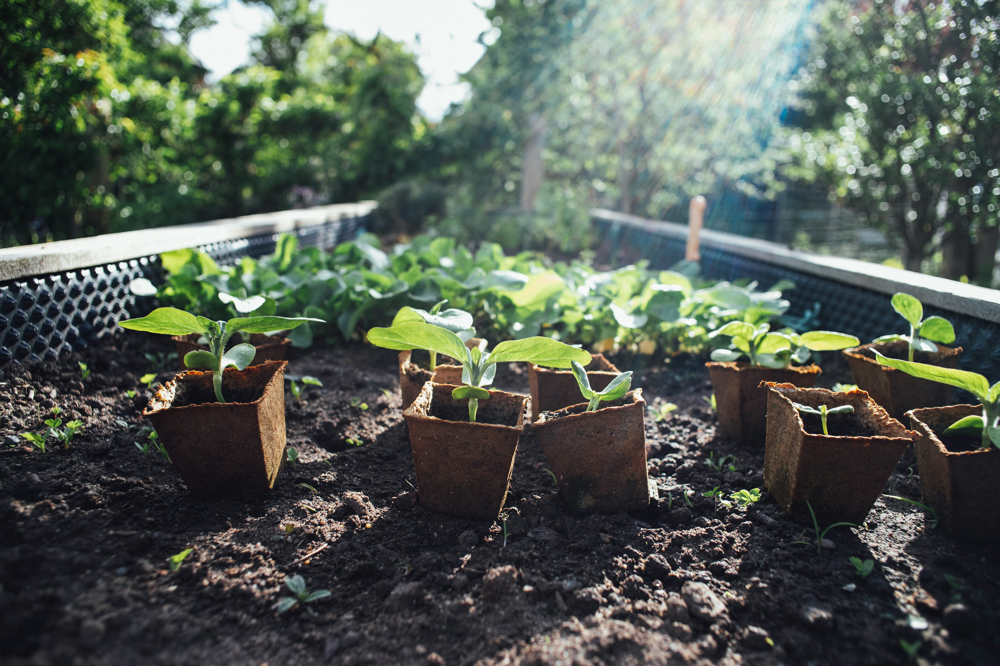

Urban gardening is the practice of growing vegetables, fruit and plants in urban areas, such as schools, backyards or apartment balconies.
Characteristic of urban gardens
Urban gardens, also known as city gardens or urban agriculture, refer to the cultivation of plants and sometimes animals within urban areas.[1] These gardens can take various forms and serve multiple purposes, from providing fresh produce for local communities to promoting environmental sustainability and fostering community engagement. Here are some characteristics of urban gardens and what can be considered as one:[2]
See also:
- Container garden, growing plants in pots or other containers, rather than in ground
- Urban horticulture, growing crops or ornamental plants in urban or semi-urban setting
- Urban agriculture, food production in urban setting
- Window box
- Urban park
Location
Urban gardens are typically located within cities or densely populated urban areas. They can be found in various settings such as parks, vacant lots, rooftops, balconies, community centers, schoolyards, or indoor spaces such as greenhouses.
Size
Urban gardens can vary significantly in size, ranging from small individual plots or container gardens to larger community gardens or urban farms. Some urban agriculture projects may cover several acres of land, while others may consist of just a few square feet.
Origins and the Rise of Urban Gardening
The concept of food cultivation in urban centers dates back to around 3,500 BC, with Mesopotamian farmers setting aside plots for farming within cities.[3] Another notable examples of urban farming includes the Aztecs, who created chinampas, or floating islands, to grow food around and in cities such as Tenochtitlan.[4] In the late 1800s and early 1900s allotment gardens became a popular way for European cities to help the urban poor become self-sufficient. For a small fee, families could purchase a plot to grow food. During the World Wars governments encouraged the creation of "Victory Gardens" or "War Gardens", small urban gardens in parks or on personal properties to grow food and reduce reliance on the food supply chain.[5]
With the rise of modern urbanization, urban gardening is undergoing a major revival. Cities around the world embraced urban gardening and farming. The gardens themselves differ in region, from the small rooftop gardens of New York to the medium sized city farms of Japan.[6][7]
Purpose
Urban gardens serve multiple purposes, mainly producing fresh food for local consumption. Other effects of urban gardens include promoting food security and access to healthy foods in urban areas; enhancing urban biodiversity; providing educational opportunities for residents, especially children; fostering community engagement; and promoting sustainable practices such as composting, rainwater harvesting, and organic gardening.[8]
Design
Urban gardens can have diverse designs and layouts, depending available space, environmental conditions, use, and aesthetic preferences. They may include traditional raised beds, vertical gardens, container gardens, edible landscapes, permaculture designs, or hydroponic systems, among others.[9]
Community Involvement
Many urban gardens emphasize community involvement and participation, allowing residents to come together to plan, create, and maintain the garden spaces. Community gardens, in particular, often involve shared responsibilities and decision-making processes among participating members.[10]